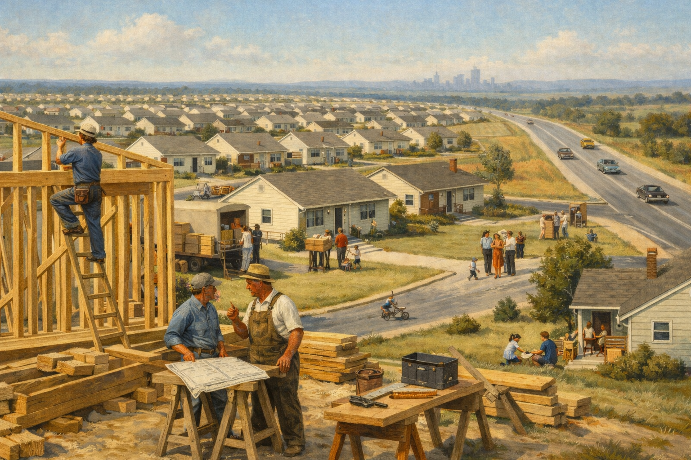
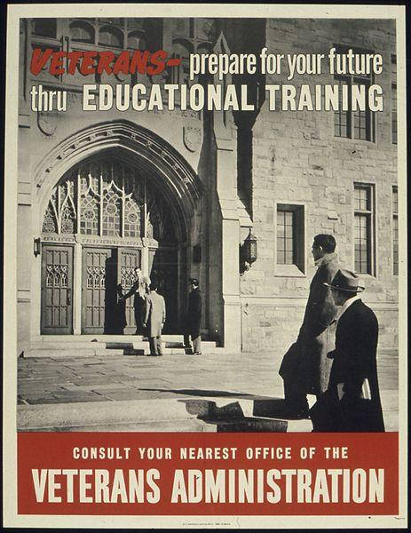
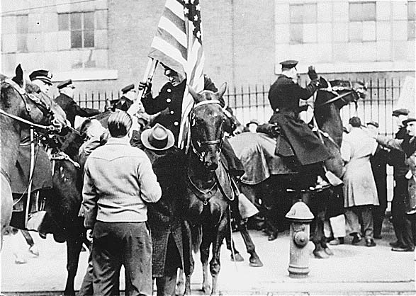
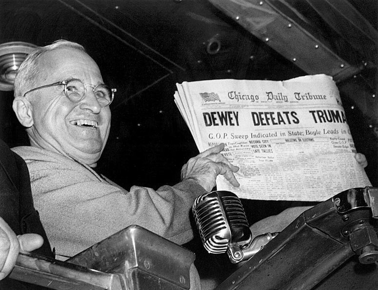
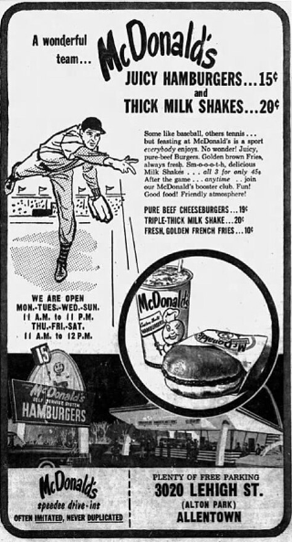
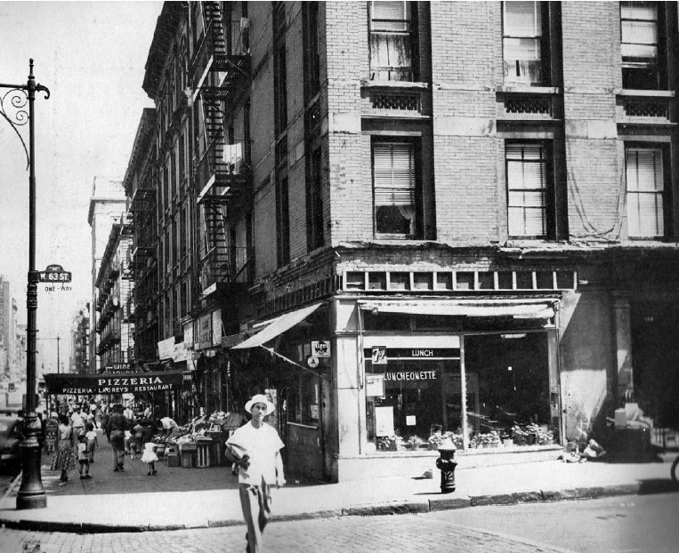
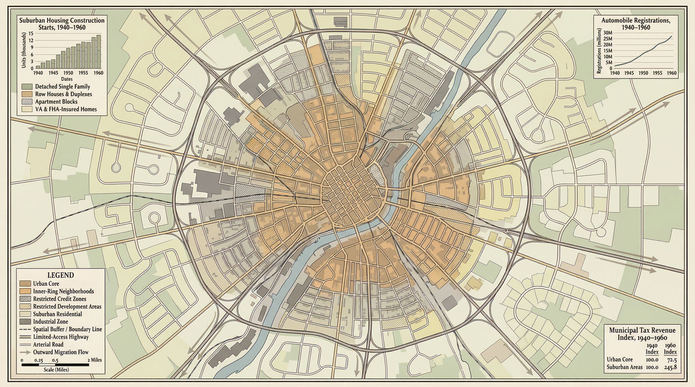

Core Objectives
- Analyze the social and economic effects of the GI Bill of Rights on home ownership and higher education.
- Trace the demographic shifts caused by the Baby Boom and the mass migration to planned suburban communities like Levittown.
- Evaluate the cultural pressure toward conformity in the 1950s workplace and domestic sphere.
Key Terms
GI Bill of Rights | Suburbs | Levittown | Harry S. Truman | Dixiecrat | Fair Deal | Conglomerate | Franchise | Baby Boom | Dr. Jonas Salk | Consumerism | Planned Obsolescence | Interstate Highway Act
Introduction: The Architecture of Affluence
The end of World War II in 1945 brought joyous celebrations to American streets, but these were accompanied by deep anxieties about a potential return to the devastating depths of the Great Depression. However, instead of an economic collapse, the United States entered an era of unprecedented expansion, fueled by sweeping federal legislation and a massive unleashing of wartime savings. This postwar boom completely transformed the national landscape, driving millions of families into mass-produced residential communities and tethering the American lifestyle to the automobile. Concurrently, this period of immense material prosperity fostered a strict culture of conformity within corporate workplaces and traditional domestic spheres. Ultimately, the 1950s defined the modern standard of living, though this suburban dream was deeply exclusive and strictly regulated by race and geography.

The massive unleashing of wartime savings and sweeping federal legislation fueled an unprecedented post-war economic boom, driving millions of American families into mass-produced suburban communities and establishing a heavily subsidized, culturally rigid modern standard of living.
Visual Analysis: How did the transition from a wartime command economy to a peacetime consumer society rely on both government legislation and the financial habits developed by American citizens during the war?
The Peacetime Transition
As the guns of war fell silent, America faced the daunting domestic challenge of transitioning from a wartime command economy to a peacetime consumer society. The federal government stepped in to ease this demobilization through the GI Bill of Rights, providing returning veterans with unemployment safety nets, low-interest housing loans, and unprecedented access to higher education. However, the immediate postwar years were also marked by severe economic turbulence, as the sudden lifting of price controls caused skyrocketing inflation, leading to massive, paralyzing strikes by millions of workers. Amidst this instability, President Harry S. Truman navigated deep political fractures; his controversial, principled stand on civil rights alienated Southern Democrats, yet he successfully secured a historic reelection upset and pushed for elements of his Fair Deal program.
The GI Blueprint
When the guns of World War II finally fell silent in the late summer of 1945, the joyous celebrations in the streets of American cities were soon accompanied by a profound, underlying anxiety. Millions of American soldiers, sailors, and marines were rapidly demobilizing and returning home, shedding their uniforms, and looking for civilian employment. For the older generation of Americans, the sudden end of wartime production brought back terrifying memories of the 1930s. Government officials and everyday citizens alike feared that the sudden influx of millions of veterans into the labor market, combined with the cancellation of billions of dollars in military contracts, would plunge the United States right back into the devastating depths of the Great Depression. The transition from a wartime command economy to a peacetime consumer economy was arguably the greatest domestic challenge the nation faced.
To ease this massive transition and reward the veterans who had saved the free world, the federal government passed the Servicemen's Readjustment Act of 1944, universally known as the GI Bill of Rights. This sweeping legislation fundamentally altered the social and economic landscape of the United States. The law provided a variety of unprecedented benefits to returning veterans. For those unable to find immediate employment, it guaranteed a year’s worth of unemployment benefits, providing a crucial financial safety net while they searched for work. More importantly, the GI Bill offered low-interest, federally guaranteed loans to veterans who wanted to buy a home, purchase a farm, or start a small business. This provision alone fueled a massive surge in home construction and small business creation, serving as the financial foundation for the postwar economic boom.
Perhaps the most transformative aspect of the GI Bill of Rights was its education provision. Prior to World War II, a college education was largely considered a privilege reserved for the wealthy elite. The GI Bill changed this paradigm by offering to pay the tuition and living expenses for veterans who wished to attend college or vocational schools. Millions of veterans, many of whom had grown up in severe poverty during the Depression and had never dreamed of stepping foot on a university campus, eagerly seized this opportunity. College enrollments skyrocketed across the nation, forcing universities to rapidly expand their campuses and hire thousands of new professors. This democratization of higher education created the most highly educated workforce in American history, generating a massive pool of engineers, teachers, doctors, and managers that would drive the incredible technological and economic advancements of the coming decades.

A poster advertising the benefits of the GI Bill for returning veterans.
Why it Matters: The GI Bill fundamentally transformed the American economy by providing working-class veterans with unprecedented access to higher education and homeownership. This legislation established the financial foundation for the massive expansion of the middle class in the postwar era.
Student Question: How did the educational provisions of the GI Bill contribute to the long-term economic prosperity of the postwar era?
Checkpoint
1. What was the primary purpose of the GI Bill of Rights?
The Engine of the Postwar Economy
Despite the profound success of the GI Bill, the immediate postwar economy was not without severe turbulence. During the war, the federal government's Office of Price Administration (OPA) had strictly controlled the prices of everyday goods to prevent inflation. When Congress suddenly lifted these price controls in the summer of 1946, the cost of consumer goods skyrocketed, with prices for basic necessities jumping by as much as 25 percent in a matter of days. This sudden spike drastically reduced the purchasing power of the American worker, sparking fears that the cancellation of military contracts would plunge the nation right back into the depths of the Great Depression.
However, the anticipated economic collapse never arrived, largely due to the financial habits Americans were forced to develop during the war. While citizens had worked long hours and earned high wages in defense plants, strict wartime rationing meant there were very few consumer goods available to purchase. Consequently, Americans had accumulated a staggering $135 billion in savings from defense work, service pay, and investments in war bonds. This massive accumulation of wealth created a powerful financial reservoir just waiting to be tapped by the domestic market.
Furthermore, the postwar boom was not sustained by consumer savings alone; it was heavily propped up by government action and foreign policy. As the Cold War intensified, the federal government maintained incredibly high levels of defense spending—particularly with the outbreak of the Korean War—which kept industrial production high and unemployment low. Additionally, massive foreign aid programs like the Marshall Plan injected billions of dollars into rebuilding Western Europe, which in turn created robust, revitalized foreign markets eager to purchase American exports.
Once factories fully retooled to produce civilian goods rather than tanks and bomber planes, the American public unleashed their saved wealth. Citizens rushed to buy the cars, televisions, electrical appliances, and homes they had been denied for years. This incredible explosion of consumer demand fueled steady, long-term economic growth, expanding the middle class and establishing a standard of living that was the envy of the world, ultimately equating consumerism with the American Dream itself.
A typical 1950s youth posing with a newly purchased television set.
Why it Matters: After years of wartime rationing and saving, American consumers unleashed billions of dollars into the domestic market. The purchase of new appliances like television sets drove massive industrial production and cemented consumerism as a core element of the new American standard of living.
Student Question: How does the widespread purchasing of new consumer appliances reflect the economic shift from a wartime command economy to a peacetime consumer economy?
Checkpoint
3. Why did consumer prices suddenly skyrocket in the summer of 1946?
Labor on the Brink
Managing the turbulent transition to a peacetime economy fell onto the shoulders of President Harry S. Truman. Truman had inherited the presidency following the sudden death of Franklin D. Roosevelt, and he faced an incredibly daunting set of domestic challenges. Not only was he forced to navigate the treacherous early days of the Cold War abroad, but he also had to deal with severe economic instability and deep political divisions at home.
As inflation soared in 1946, American workers found that their paychecks could no longer cover the rising cost of living. In response, millions of workers in the steel, coal, and railroad industries went on strike, demanding higher wages and better working conditions. The sheer scale of these strikes threatened to paralyze the entire national economy. Truman, generally a friend to organized labor, grew increasingly furious at the union leaders, believing that their strikes were threatening national security during a fragile time. In a dramatic display of executive power, Truman threatened to draft the striking railroad workers into the military and then order them, as soldiers, to stay on the job. Before he could follow through on this unprecedented threat, the unions backed down and reached a settlement. However, the strikes severely damaged Truman's popularity, leading the American public to elect a conservative Republican majority to Congress in 1946, a legislative body that would consistently block Truman's domestic agenda.

Workers picketing during the immense nationwide labor strikes of 1946.
Why it Matters: As postwar inflation soared, millions of workers found their wages unable to match the rising cost of living, leading to massive strikes that threatened to paralyze the nation. This wave of labor unrest forced President Truman into a high-stakes confrontation with union leaders at a critical moment in the economic transition.
Student Question: Why did the sudden lifting of wartime price controls lead directly to massive labor strikes across multiple major industries?
Checkpoint
5. Why did millions of American workers go on strike in 1946?
Truman's Upset
Despite his struggles with the economy, Truman took a bold and historic stand on the issue of civil rights. Following the war, African American veterans who had fought for freedom overseas returned home to face brutal racism, systemic segregation, and horrific violence, particularly in the South. Truman, horrified by reports of violence against Black veterans, appointed a presidential commission on civil rights. Following their recommendations, he asked Congress to pass a federal anti-lynching law, a ban on the poll tax as a voting requirement, and a permanent civil rights commission. When the conservative Congress flatly refused to pass any of these measures, Truman used his executive authority. In 1948, he issued a landmark executive order mandating the complete integration of the United States armed forces, ending the policy of racially segregated military units. He also ordered an end to discrimination in the hiring of government employees.
Truman's principled stand on civil rights triggered a massive political revolt within his own Democratic Party. As the 1948 presidential election approached, a large group of Southern Democrats, furious over Truman's integration policies, stormed out of the national convention. They formed the States' Rights Democratic Party and nominated Governor Strom Thurmond of South Carolina for president. These rebellious Southern politicians became known as the Dixiecrat faction. They were determined to protect the Southern system of racial segregation and prevent any federal interference in state laws.
With his party fractured by the Dixiecrats on the right and by a progressive faction on the left, practically every political expert and newspaper in the country predicted that Truman would suffer a crushing defeat to the Republican candidate, Governor Thomas E. Dewey of New York. Refusing to surrender, Truman launched a furious, nationwide "whistle-stop" train tour. He traveled across the country, giving hundreds of fiery speeches from the back of a train, attacking the "do-nothing" Republican Congress. In one of the greatest political upsets in American history, Truman won reelection, famously holding up a prematurely printed newspaper with the headline "Dewey Defeats Truman" while celebrating his victory. Emboldened by his win, Truman proposed an ambitious economic program he called the Fair Deal. An extension of Roosevelt's New Deal, the Fair Deal proposed nationwide compulsory health insurance and a crop-subsidy system to provide a steady income for farmers. While conservative opposition in Congress defeated his health care and farming proposals, Truman successfully pushed through an increase in the minimum wage, an expansion of Social Security coverage, and federal funding for low-income housing projects.

President Truman joyously holding up a Chicago Tribune newspaper that incorrectly announced his defeat.
Why it Matters: Despite deep political fractures within his own party and facing almost certain defeat, Truman's aggressive whistle-stop campaign secured a shocking victory in the 1948 election. This moment demonstrates how his administration survived the Dixiecrat rebellion and secured a mandate to push for his Fair Deal programs.
Student Question: Why is the 1948 presidential election considered a pivotal moment for both the Democratic Party and the broader civil rights debate?
Checkpoint
6. What bold action did President Truman take regarding civil rights in 1948?
The New American Landscape
With the economy roaring to life, the physical geography and demographic makeup of the nation shifted dramatically. Facing a severe housing shortage, developers like William Levitt utilized factory assembly line techniques to build affordable, planned residential communities outside of crowded cities, kicking off a mass migration to the suburbs. This suburban explosion was matched by an incredible demographic shift, as economic confidence led to a massive spike in the birth rate that fundamentally altered the national economy and culture. Concurrently, monumental scientific breakthroughs and public works, such as the eradication of polio and the construction of the interstate highway system, radically improved public health and physically connected the newly sprawling suburban map.
Engineering the Suburbs
As the American economy roared to life in the 1950s, the physical landscape of the nation underwent a radical transformation. Returning veterans faced a severe housing shortage. During the Great Depression and World War II, very few new homes had been constructed. In the late 1940s, it was common to find multiple families crammed into tiny apartments, or living in converted streetcars, grain silos, and even coal sheds. The desperate need for affordable family housing led to the creation of the modern Suburbs—residential communities located outside of crowded, industrial city centers.
The pioneer of this suburban revolution was a developer named William Levitt. Levitt utilized the mass-production techniques of the factory assembly line and applied them to home construction. By standardizing the design, pre-cutting the lumber, and breaking the building process down into twenty-seven distinct steps, Levitt’s crews could build houses at an astonishing speed. In a potato field on Long Island, New York, Levitt built a massive, planned community that came to be known as Levittown. Featuring rows of identical, affordable homes with neat front lawns, white picket fences, and modern appliances, Levittown became the blueprint for the American Dream. Thousands of young families flocked to these developments, utilizing the low-interest loans provided by the GI Bill of Rights. However, this suburban dream was deliberately exclusive. Levittown and similar communities frequently employed restrictive covenants—legal clauses written into the property deeds that explicitly forbade the sale or rental of the homes to African Americans, Jewish Americans, and other minority groups, permanently cementing racial segregation into the geography of the postwar landscape.
The mass migration to the suburbs was accompanied by an unprecedented demographic explosion. As soldiers returned home and economic confidence soared, Americans began getting married at younger ages and having significantly more children than previous generations. This massive spike in the birth rate, which lasted from the late 1940s to the early 1960s, is known as the Baby Boom. At the height of the boom in 1957, an American infant was born every seven seconds. This generation became the largest in the nation's history, fundamentally altering the American economy and culture. The baby boom fueled an insatiable demand for larger houses, new schools, children’s clothing, and toys. Entire industries pivoted to cater to the needs of these growing families, elevating child-rearing to a national obsession and cementing the image of the nuclear family as the absolute center of American life.
An aerial view showing the mass-produced, standardized houses of an early suburban Levittown community.
Why it Matters: Levittown represented a radical transformation of the American landscape, utilizing factory assembly line techniques to mass-produce affordable, single-family homes. This explicitly planned development triggered a massive demographic migration out of cities, while simultaneously enforcing strict racial segregation through restrictive covenants.
Student Question: In what ways did the mass-production techniques used to build suburban tract housing compare to the industrial methods developed during wartime manufacturing?
Checkpoint
8. How did William Levitt revolutionize the home construction industry?
Paving the Future
The prosperity of the era was also marked by incredible medical advancements that saved the lives of millions of these children. For decades, the disease poliomyelitis, or polio, had terrorized American families, paralyzing or killing thousands of children every summer. In 1955, the brilliant medical researcher Dr. Jonas Salk introduced the first effective polio vaccine. The federal government sponsored a massive, nationwide inoculation program, distributing the vaccine to millions of schoolchildren. Within a few short years, the terrifying threat of polio was virtually eliminated, symbolizing the triumph of modern American science and improving the quality of life for the baby boom generation.
To connect this rapidly expanding network of suburban communities with the cities where people worked, the government undertook the largest public works project in American history. In 1956, President Dwight D. Eisenhower signed the Interstate Highway Act, which authorized the construction of a 41,000-mile network of high-speed, multi-lane expressways spanning the entire nation. While the highway system was publicly promoted as a necessity for the new suburban commuter and the exploding automobile industry, Eisenhower also viewed it as a critical national defense measure, allowing for the rapid evacuation of major cities and the swift movement of military convoys in the event of a Soviet nuclear attack. The new highways transformed America; they accelerated the decline of the commercial railroad system, sparked the creation of drive-in restaurants, motels, and massive shopping malls, and fundamentally tethered the American lifestyle to the automobile.
Dr. Jonas Salk, the medical researcher who successfully developed the first effective vaccine against polio.
Why it Matters: The introduction of the polio vaccine was a monumental public health breakthrough that saved millions of children from a terrifying, paralyzing disease. This massive nationwide inoculation campaign symbolized the triumph of modern American science and drastically improved the security of the baby boom generation.
Student Question: How did the successful campaign to eradicate polio reflect the era's broader confidence in scientific innovation and government-sponsored public health initiatives?
Checkpoint
10. What was President Eisenhower's secondary justification for the Interstate Highway Act of 1956?
The Culture of Affluence
The extraordinary prosperity of the 1950s fundamentally altered the nature of American work and established strict societal expectations. The rise of massive multi-industry corporations and standardized business models created a surge in white-collar jobs, offering employees secure, comfortable lives in exchange for an intense psychological pressure to conform and surrender their individuality. This pressure extended deeply into the domestic sphere, where rigid gender roles were strictly enforced, even as many women secretly felt profoundly unfulfilled by their suburban isolation. The ultimate reward for this conformity was an era of rampant consumerism, driven by easy credit, sophisticated advertising, and planned obsolescence, though this gleaming facade often masked the rapid decay of urban centers left behind by affluent white flight.
The Culture of Conformity
As millions of Americans settled into their new suburban homes, the nature of American work shifted dramatically. For the first time in the nation's history, white-collar workers—those in clerical, managerial, or professional occupations—outnumbered blue-collar, manual laborers. The postwar economic boom led to the massive expansion of corporate America, fundamentally altering the way businesses operated and how workers viewed their careers.
One of the defining economic developments of the era was the rise of the Conglomerate. A conglomerate is a massive, multi-industry corporation made up of several smaller, completely unrelated companies. To protect themselves against downturns in any single market, large corporations began buying up diverse businesses. For example, a company that primarily manufactured electronics might purchase a car rental agency, an insurance firm, and a hotel chain. This diversification guaranteed corporate stability and created vast bureaucracies of mid-level managers who spent their days in identical office buildings. Alongside conglomerates, the 1950s witnessed the explosion of the Franchise business model. A franchise is a company that offers similar products or services in many different locations, sold by independent business owners who pay to use the parent company's name and system. The most famous early example was McDonald's, led by entrepreneur Ray Kroc, who standardized the fast-food process to guarantee that a customer would receive the exact same hamburger in California as they would in New York.
These massive corporate structures offered their employees secure, well-paying jobs, excellent health benefits, and comfortable retirements. However, this security came with a steep psychological cost: the intense pressure to conform. The corporate culture of the 1950s highly valued team players who did not rock the boat, who dressed similarly, and who agreed with the company's established practices. Sociologists and writers of the era noted that businesses were actively weeding out creative, independent thinkers in favor of the "organization man," a loyal employee who surrendered his individuality for the sake of corporate harmony. This pressure to conform extended deeply into the domestic sphere of the suburbs. There were profound social expectations regarding how a middle-class family should live: the husband was expected to be the sole breadwinner, while the wife was expected to find ultimate fulfillment as a cheerful homemaker and mother. Despite these rigid cultural scripts, many women secretly felt deeply unfulfilled by the isolating routine of suburban domesticity, planting the seeds for the feminist movement of the following decade.

An early McDonald's restaurant highlighting the standardized approach to fast food and franchise business.
Why it Matters: The explosion of franchise businesses like McDonald's fundamentally altered the American economic landscape by prioritizing predictable, standardized services over independent, localized businesses. This shift toward mass corporate structures closely mirrored the broader societal push toward conformity and uniform middle-class lifestyles.
Student Question: How does the business model of a nationwide franchise like McDonald's reflect the societal pressures toward conformity in postwar corporate culture?
Checkpoint
11. How did the rise of the conglomerate and franchise business models affect the white-collar workplace?
The Price of Prosperity
The ultimate reward for this corporate and suburban conformity was unprecedented material wealth. The 1950s became the golden age of Consumerism, as buying material goods came to be equated with American success and a patriotic defense against communism. Flush with cash and fueled by an explosion of easy credit, including the introduction of the first modern credit cards, Americans purchased a dazzling array of new products. Sales of washing machines, refrigerators, electric blenders, and especially televisions skyrocketed.
To ensure that consumers kept buying even after they had acquired these new items, manufacturers enthusiastically embraced the strategy of Planned Obsolescence. In this system, companies purposely designed products to become outdated, wear out, or break down within a short period of time. Furthermore, the automobile and fashion industries introduced new designs every single year, convincing consumers that last year's model was hopelessly out of style. Americans were constantly pressured by a highly sophisticated advertising industry to discard their perfectly functional goods and buy the newest, most modern replacements.
However, this gleaming image of the American Dream was profoundly incomplete. The mass migration of affluent white families to the suburbs—a process often referred to as "white flight"—drained American cities of vital tax revenue. As businesses and middle-class residents abandoned the urban core, city centers fell into rapid decay, leaving behind millions of African American, Latino, and working-class citizens trapped in deteriorating neighborhoods with underfunded schools, failing infrastructure, and limited economic opportunities. While television commercials and magazine advertisements broadcast an idealized vision of universal middle-class prosperity, the reality of the 1950s was a deeply divided nation, where access to the suburban dream was strictly regulated by race and geography.

A declining urban neighborhood left behind as affluent residents migrated to newly constructed suburbs.
Why it Matters: While the 1950s were characterized by incredible suburban affluence, this prosperity deliberately excluded millions of minority and working-class citizens who were trapped in deteriorating urban centers. The mass migration of white flight drained cities of crucial tax revenue, setting the stage for deep geographic and racial divides.
Student Question: Why did the incredible wealth generated by the postwar economic boom fail to reach the residents of major urban centers?
Checkpoint
13. Which business strategy successfully encouraged Americans to constantly purchase new consumer goods?
Quantitative & Spatial Analysis | Data and Debate
The Baby Boom and the Suburban Explosion

The rapid expansion of suburban housing and the ensuing spike in automobile ownership heavily subsidized affluent families, while discriminatory practices and restrictive covenants trapped minority populations in underfunded, decaying urban centers, creating deep spatial and economic inequalities.
The Evidence
Between 1940 and 1960, the demographic and spatial data of the United States shifted more dramatically than at almost any other time in history. Census data reveals that the U.S. birth rate plummeted during the Great Depression, but following the end of World War II, it skyrocketed. In 1957 alone, over 4.3 million babies were born. Concurrently, data tracking housing construction shows a massive spike. In 1944, only 114,000 new single-family homes were started; by 1950, that number had surged to nearly 1.7 million, with the vast majority of these new homes being built in newly zoned suburban tracts outside of major urban centers. Automobile ownership data mirrored this trend, jumping from roughly 26 million registered cars in 1945 to over 60 million by 1960.
What the Data Reveals
These three data points—the soaring birth rate, the explosion of suburban housing construction, and the massive increase in automobile ownership—are intimately connected. The data reveals a young, rapidly expanding population that possessed the economic confidence to start large families. It shows that as these families grew, they utilized the low-interest loans of the GI Bill to move out of crowded city apartments into spacious, single-family suburban homes. Finally, the car data proves that this new suburban lifestyle was entirely dependent on the automobile, as these new communities were built far away from urban jobs and traditional public transportation networks.
The Historical Debate
Historians vigorously debate the long-term impact of these statistics. Traditional historians often point to this data as evidence of the "Golden Age" of American capitalism, arguing that the suburban explosion represented a magnificent democratization of wealth, allowing millions of working-class veterans to achieve the dream of homeownership. Revisionist historians, however, interpret the same data as evidence of systemic inequality. They argue that the housing data hides the reality of restrictive covenants and discriminatory lending practices (redlining) that explicitly barred African Americans and other minorities from purchasing homes in these booming suburbs, essentially locking them out of the primary engine of middle-class wealth creation for generations.
Why It Matters
The spatial shift from the city to the suburb dictated the future of American politics, economics, and environmental policy. The demand generated by the baby boom fueled a massive consumer economy, necessitating the building of thousands of new schools, shopping malls, and hospitals. Conversely, the "white flight" indicated by this data left inner cities starved of tax revenue, setting the stage for the severe urban crises and racial unrest that would explode across the nation in the 1960s.
Spatial Reasoning Questions
Synthesize Connections: Analyze the relationship between the surge in housing starts and the jump in automobile registrations; why did the physical layout of the new suburbs make the car a functional necessity rather than a luxury?
Check for Bias: Compare the "Golden Age" interpretation with the revisionist perspective; how does the inclusion of data regarding redlining and restrictive covenants change the narrative of the "democratization of wealth"?
Trace the Cause: Evaluate the long-term consequences of "white flight" as suggested by the shift in tax revenue; how did the spatial reorganization of the 1950s contribute to the urban economic crises of the following decade?
Vocabulary Activity
Read the historical narrative below and fill in the numbered blanks using the correct term from the Word Bank. Each term will be used exactly once.
Following the allied victory in World War II, President 1. faced the enormous task of transitioning the United States to a peacetime economy. To prevent another depression and assist returning veterans, the federal government passed the 2. , which provided crucial financial safety nets, paid for college tuitions, and offered low-interest loans.
These loans fueled a mass migration out of crowded city centers and into planned residential communities known as the 3. . The most famous blueprint for these mass-produced neighborhoods was 4. , built in a New York potato field. As families settled into these affordable homes, economic confidence soared, resulting in a massive demographic spike in the birth rate known as the 5. . To protect this growing generation from devastating illnesses, medical science advanced rapidly, highlighted by the polio vaccine introduced by 6. . To physically connect this sprawling new landscape and ensure rapid military transport in case of a Cold War emergency, the government passed the 7. .
Economically, the workplace transformed as large corporations dominated the landscape. Some businesses chose to diversify into a massive 8. to protect themselves against single-market downturns, while others utilized the 9. model to sell standardized products across different locations. The ultimate reward for corporate loyalty was unprecedented material wealth, kicking off a golden age of 10. . To ensure Americans kept purchasing new appliances and cars, manufacturers enthusiastically embraced the strategy of 11. , purposely designing products to become outdated or break down quickly.
Politically, the era was defined by intense fractures. The president's bold executive orders integrating the military and his push for civil rights angered Southern politicians, leading them to form the rebellious 12. faction during the 1948 election. Despite this split, the president secured a stunning victory and attempted to expand the social safety net through an ambitious economic program called the 13. .